Chris H — UX Researcher & Designer
Product discovery · Accessibility · Human‑centred interaction
Sobersauce — UX Case Study
This project demonstrates my ability to design for conversion by improving product findability and reducing checkout friction. This is a speculative case study created for portfolio purposes, based on a real client brief.
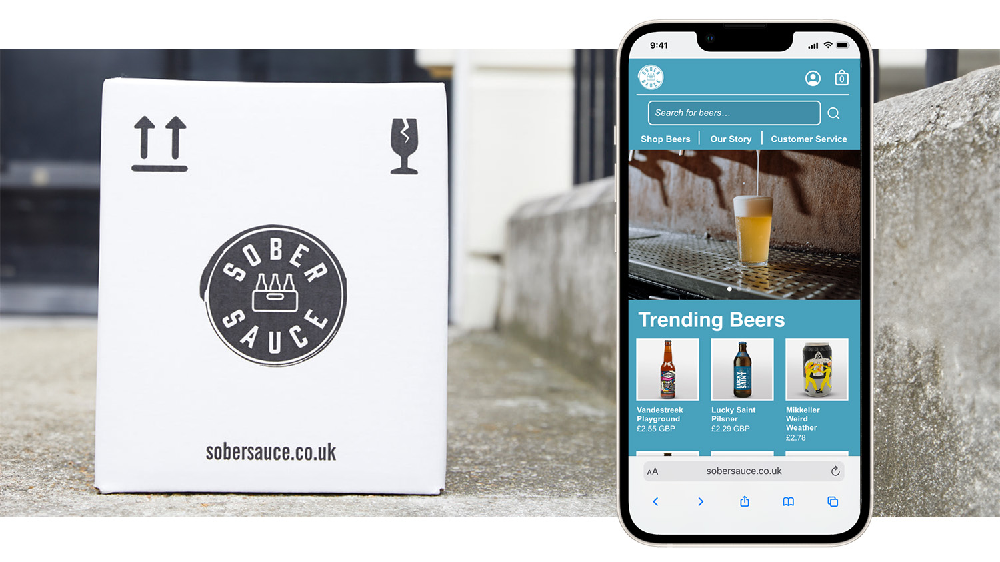
Overview
Sobersauce is an eCommerce refreshment company that sells and delivers a range of low‑ and no-alcohol beverages. Analytics data was reviewed to reveal a high cart abandonment rate on mobile, which impacted sales. An Information Architecture review was conducted alongside moderated usability testing and journey mapping to yield further insights about the problem. The site structure was then rearchitected and the UI iteratively redesigned before being subjected to further usability testing. Content such as 'trending beers' are now easier to find, product search and filtering are more intuitive, and accessibility tweaks keep the design WCAG‑AA compliant. Product Display Pages (PDP) and checkout flows have been streamlined with clearer information, fewer steps, and improved navigation.
Problem
Analytics data revealed a high cart abandonment rate on mobile, negatively impacting sales.
Research
Low findability resulted in high interaction costs.
The existing website structure included 19 separate product list pages with conflicting titles, such as '0.0% ABV Alcohol Free Beers' and 'Alcohol Free Dark Beers'. This inconsistency increased navigation steps and contributed to high drop‑off rates.
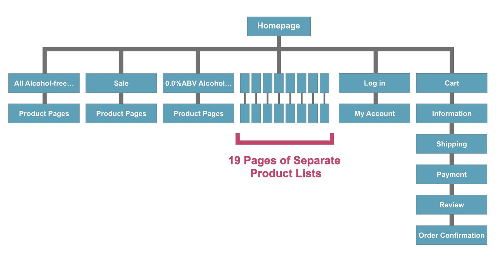
User Journey
User behaviour across the purchase journey was documented (yellow) alongside the pain points they experienced (red). Potential solutions were mapped retrospectively (green).
Click/tap to zoom-in on the above diagram.
Insights
Feelings of confusion, irritation, and impatience across Product List Page (PLP), PDP, and checkout.
Early usability testing revealed numerous pain points around difficulty in locating product information, navigation, and data input. This aligned with the analytics data.
Key opportunities:
- Combine product categories and introduce sorting/filtering functionality.
- Remove duplicate data requests during the checkout process.
- Improve clarity of product information on PDPs (and PLPs for supporting comparisons)
- Reduce input and navigation steps during the add-to-basket process.
Ideation
PDPs to be presented as micro-PDPs that 'pop-out' when a product is selected from the PLP.
Richer product details, quantity selection functionality, and an add-to-basket call-to-action (CTA) without leaving the PLP.
The homepage and “Shop Beers” page were redesigned to promote the most popular products and to implement sorting/filtering functionality.
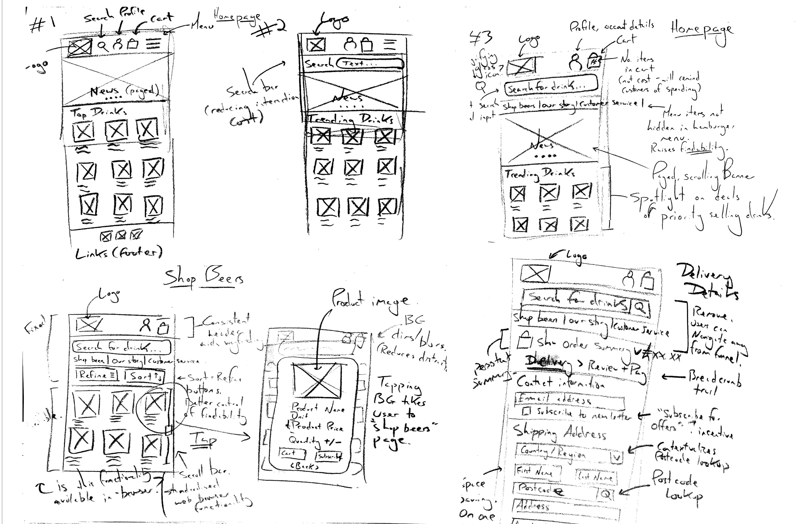
Wireframes
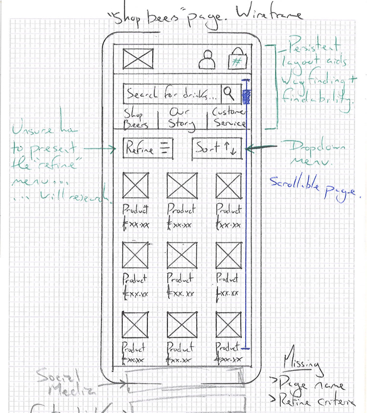
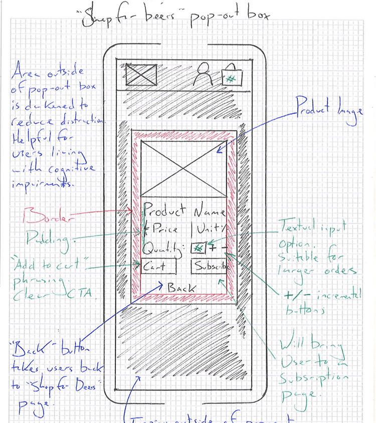
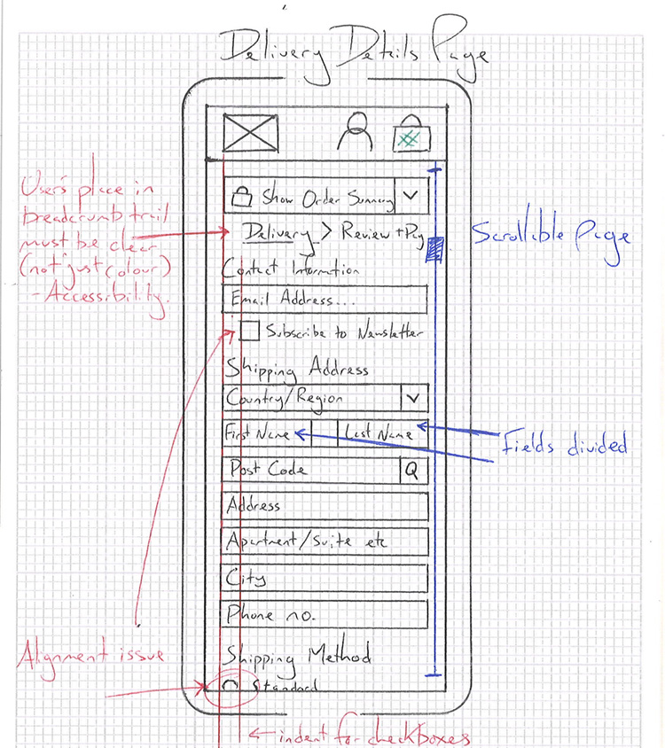
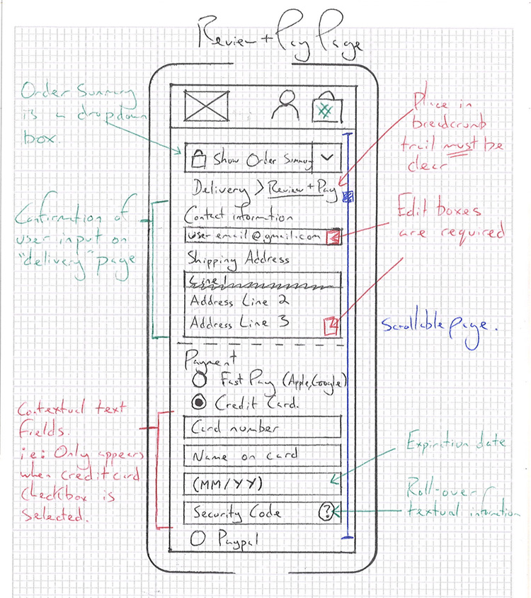
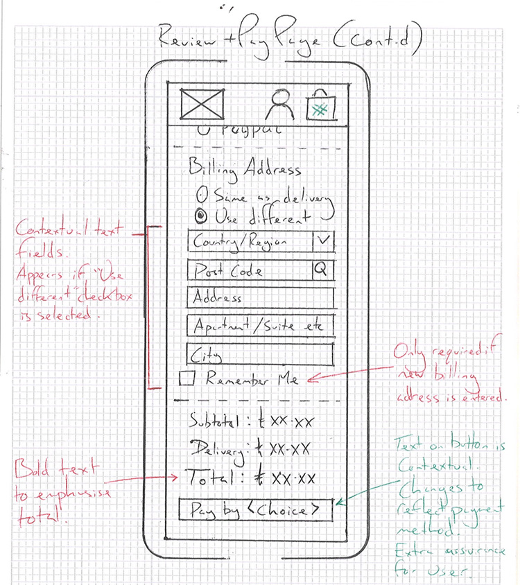
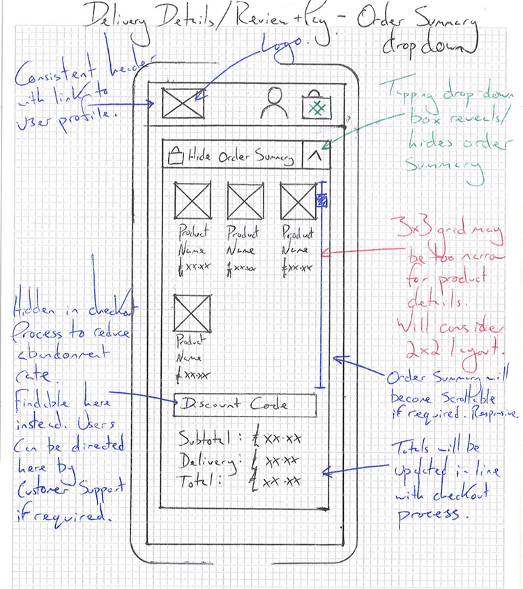
Usability Testing
Users stopped reporting feelings of confusion when finding products or checking out.
Think‑aloud protocol during moderated usability testing showed users instinctively used the new search and filter functions. Users requested auto‑complete functionality search due to the creative naming of craft beers.
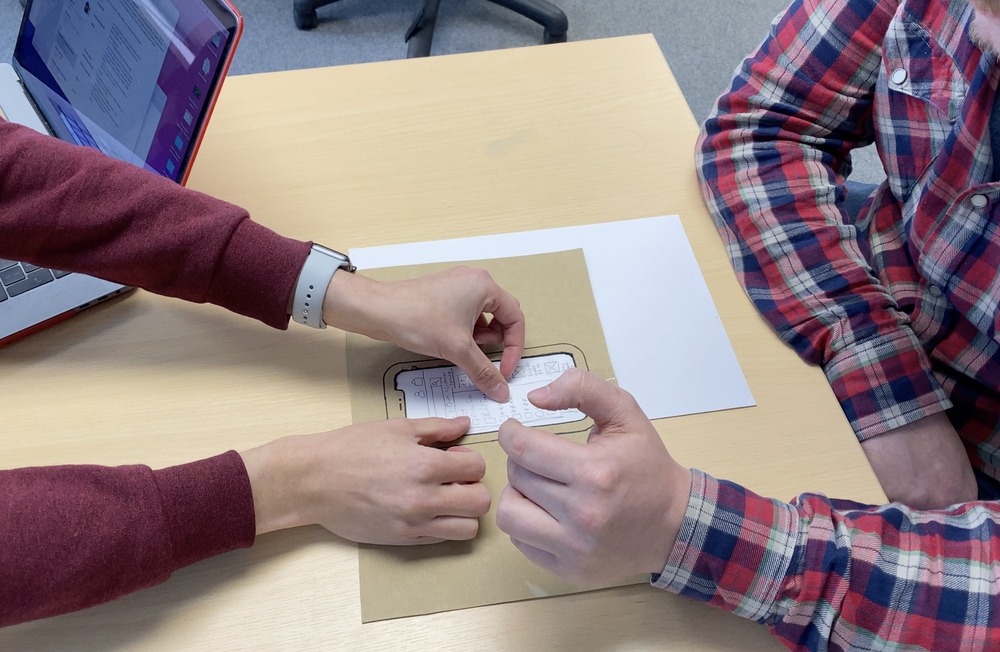
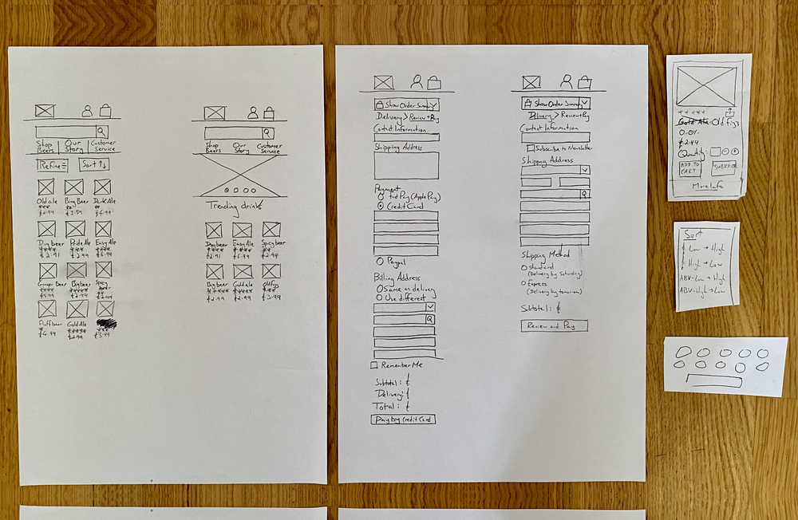
Prototype
Adobe XD was used for building a high-fidelity prototype.
Adobe XD was chosen for its compatability with the Adobe Create Cloud Suite. Artefacts created in Adobe Protoshop and Illustrator could be efficiently pipelined into the Adobe XD Prototype. The Development Team, who used Adobe Dreamweaver as their IDE were also invited as collaborators to the Adobe XD document.
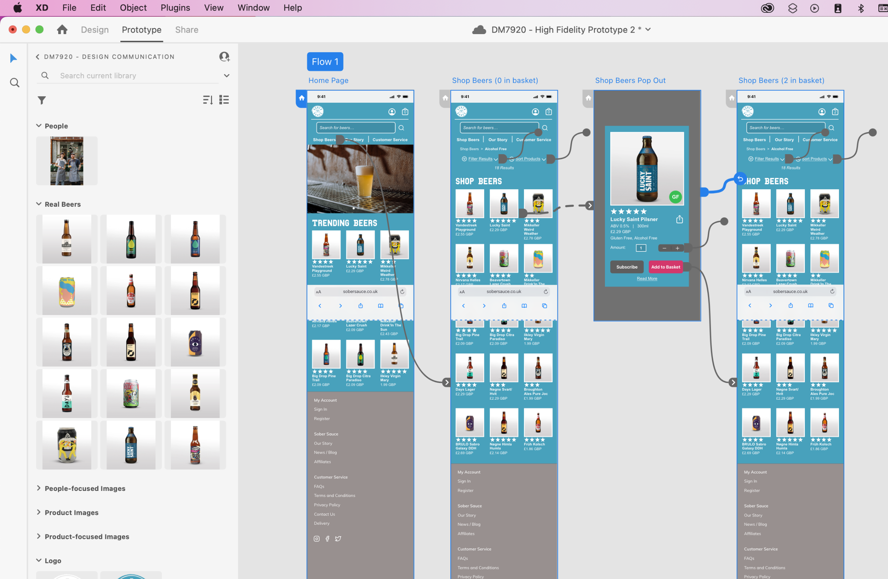
Homepage and 'Shop Beers'
PLP and PDP
Review, Payment, and Delivery Screens
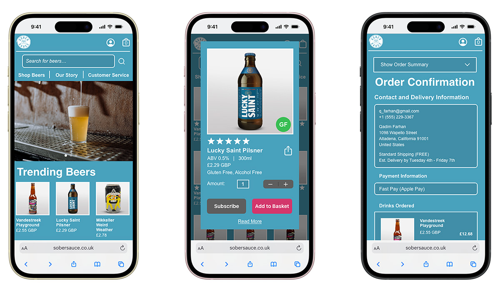
Reflection and Lessons Learned
The amount of product pages and checkout steps can increase the user's cognitive load, ultimately leading to frustration and irritation. Users may instinctively look for search functionalities rather than browsing product categories - they expect these functionalities, perhaps due to established design patterns. Pop-out PDPs were an experimental suggestion that was received well in testing.
© 2026 Chris H — UX Research & Design